Сказ о том, как
Жека на
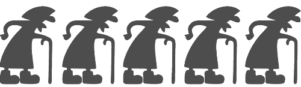 кинул
Сказ о том, как
Жека на
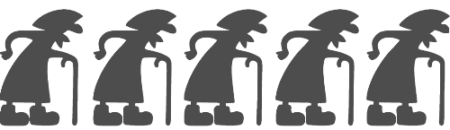 кинул
Тут я хотел бы осветить историю того, как Жека меня и не только с курса выпер за якобы поддержку войны на Украине.
Хочу сразу оговориться:
- Я против войны!
- Мне плевать на то, какой у человека паспорт, какой он национальности и на каком языке говорит!
- Я против смертей мирных жителей и смертей военнослужащих, к какой стороне они бы не относились, ведь все они кому-то сыновья и дочери, отцы и матери, братья и сестры и т.д.
- Я людей воспринимаю в первую очередь как людей!
Так оно или нет - вам решать, возможно этот пост как-то повлияет на ваше мнение, а если нет, то кто я такой, чтобы влиять на ваше мнение)
Я буду стараться описывать все в хронологии, прикладывая скрины сообщений из Discord каналов Жеки, некоторые пояснять и постараюсь сделать так, чтобы это не было вырвано из контекста.
Скрины я уже делал после того, как меня выперли, через аккаунт моего знакомого, который говорит меньше меня и возможно правильно делает, ведь ему знания Жеки нужны больше чем мне)
Моей информации не надо верить и принимать ее за чистую монету, я ее отражаю со своей точки зрения и она тоже может быть предвзята.
В любом случае, кому интересно, вот небольшая предыстория.
Дело было в ноябре. Я решил освоить верстку посе 2х неуспешных попыток.
Взяться я решил основательно, начал изучать бесплатные материалы на канале Жеки и они мне очень зашли.
Я подумал, что Жека очень доходчиво объясняет материал и является отличным преподавателем. Кстати именно это мнение о нем у меня так и не изменилось!
Как результат, я решился записаться на "Курс по верстке: Зима 2022", конечно же от Жеки.
Курс на тот момент времени стоил 300$, я сначала оплатил бронь в размере 50$, после чего доплатил 150$.
Вот картЫнка:

Как видно, все адекватно и вежливо.
В конце января 2022 начался курс. Все было организовано отлично: Чаты разделены по темам, занятия проводились 2 раза в неделю по 3 часа каждое.
Жека проводил онлайн уроки, задавал домашки, менторы эти домашки проверяли и все были счастливы)
Все было хорошо, до момента, пока 24.02.2022 Правительство России не начало Войну на Украине или Спец. операцию, тут уж кому как угодно, не об этом тут речь.
Свою позицию я уже высказал выше.
У Жеки в правилах к чатам был вот такой пост, который описывает правила поведения в чатах. Как по мне эти правила более чем рациональны.
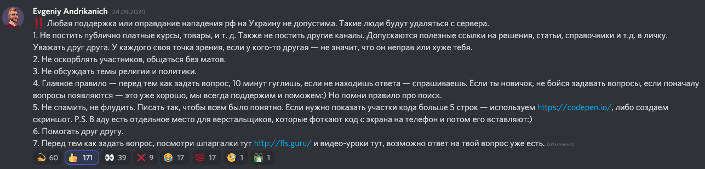Скрин был снят уже после всех произошедших событий, в самом начале все условия были точно такими же, за исключением 1й строки.
Но к этому мы еще вернемся, просто запомните эти правила.
После начала Войны или Спец.операции(мое мнение выше вы помните), Жека начал постить в чат с объявлениями следующее:
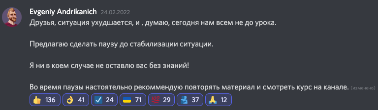
В целом я человека понимаю, сопереживаю и пока все воспринимал с пониманием.
Следующий пост и вовсе несет благие намерения и пытается урегулировать ситуацию.
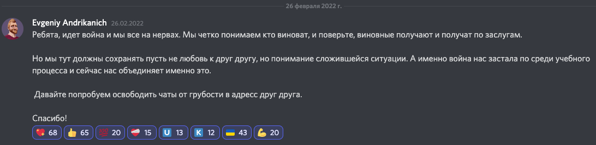Следующий этап я бы описал фразой: "Война началась не только на поле боя, но и в головах людей".
07.03.2022 Жека создает на курсе обучения чат под названием "чат-о-войне", в который автоматом были добавлены все участники курса.
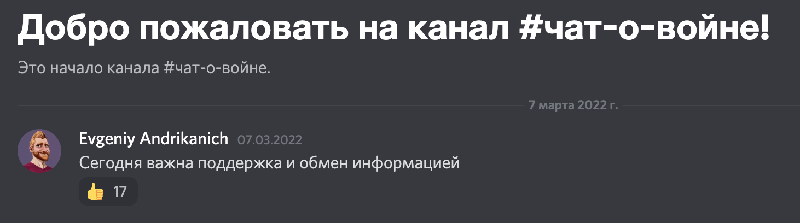После того, как в чате "чат-о-войне" я увидел первое сообщение от Жеки - я понял цель данного чата и она, как я считаю, носила позитивный характер.
Но дальше что-то пошло не так...
Я не понял, как второе сообщение от Жеки в чате "чат-о-войне" связано с той целью, которая была описана в его первом сообщении.
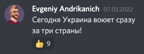Если это представлено, как обмен информацией, то как по мне данная информация никому не помогает.(IMHO)
Но опять же, я все еще понимал, эмоции, ситуация и прочее, но дальше ситуация выходила из под контроля.
Мое мнение(которое возможно никому не нужно): Если ты как учитель создаешь подобного рода чат и вбрасывать подобного рода сообщения, то будь готов к тому, что не все будут разделять твою точку зрения.
Плюс, я не зря приложил ранее скрин правил поведения в чатах, созданных Жекой.
Создав чат "чат-о-войне" и начав постить сообщения, которые начали делить людей на группы мнений - Жека перечеркнул собсвенные же правила.
В данном чате люди начали постить очень сомнительные материалы: "Достоверные" новости о кол-ве убийств мирных жителей, фото с ранеными, иногда даже расчлененку(благо Жека удалял эти посты).
На канале начался раскол, который Жека мог пресечь на тот момент времени, но вместо этого, он начал подогревать споры, отстаивая свою точку зрения и не пресекая различного рода вбросы(не только в чате "чат-о-войне"), которые поджигали гудки различных сторон.
Вот примеры сообщений:
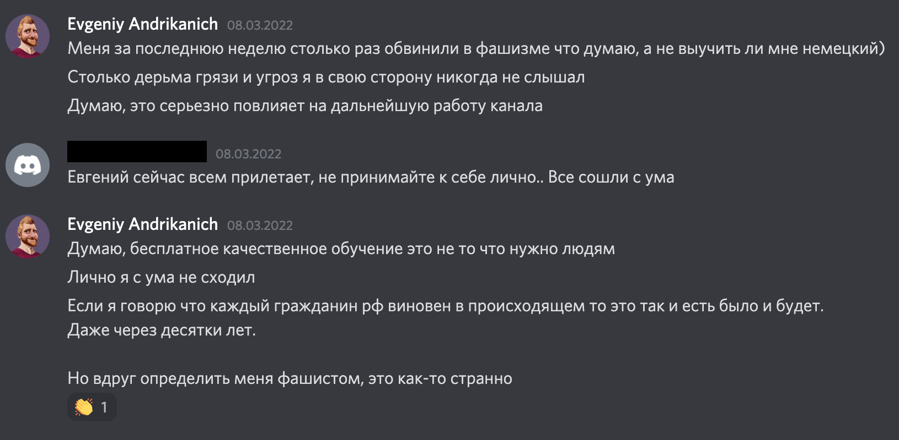 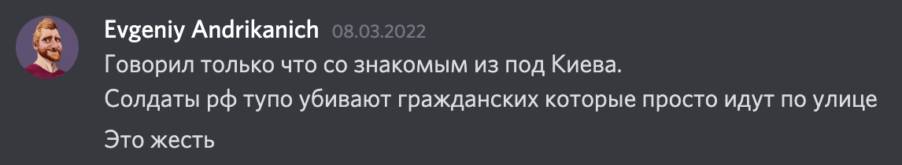 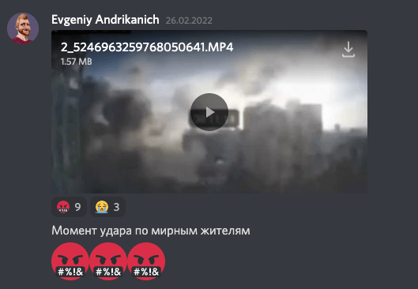 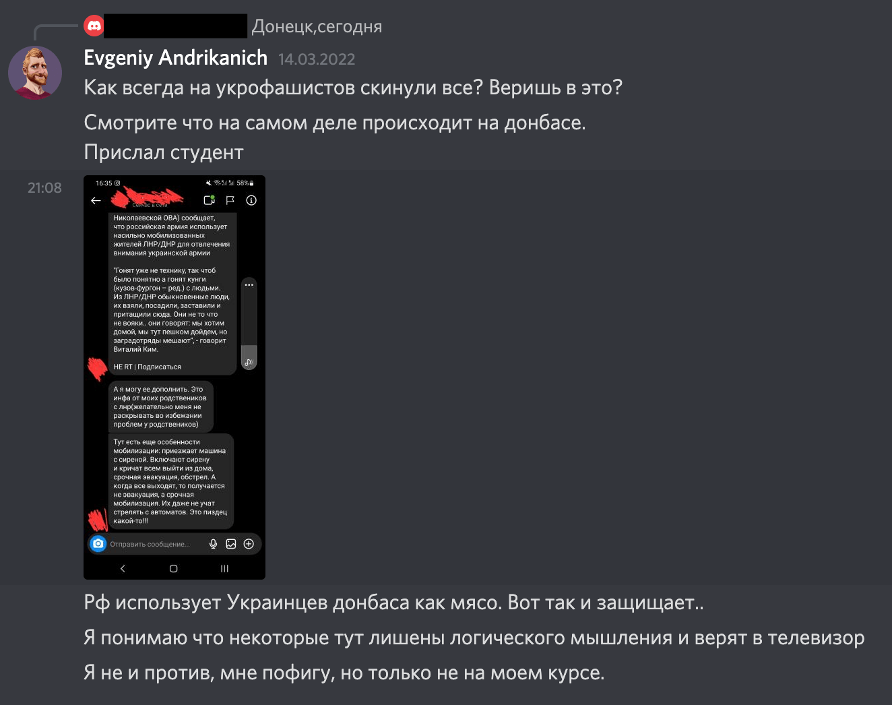 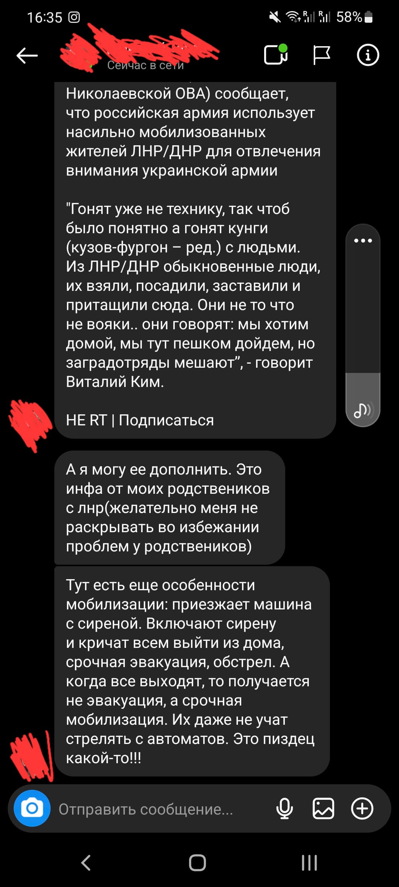Касательно чата "чат-о-войне" можно еще долго рассуждать, я еще на тот момент времени понял, что мне там делать нечего и поставил его на mute.
Но результаты существования чата "чат-о-войне" не заставили себя долго ждать, гудки многих людей уже были подогреты, а у некоторых и вовсе полыхали.
Это сказалось на эмоциональном состоянии Жеки и он запостил объявление о приостановке курса без технической возможности вернуть средства за курс.
Вот тут гудки разогрелись и в других чатах, предназначенных для учебы.
Еще на тот момент времени я Жеку понимал, ибо помню свое состояние: первые 3 дня событий я поглощал "достоверные" новости и морально был не готов учиться или делать что-то на полной концентрации.
Небольшое отступление, дабы понимать как я отношусь к информации:
Первые дни событий я, как и многие, поглощал много информации с разных источников, я смотрел официальные источники Украины, России, BBC News и прочие Youtube каналы по типу "Радио свободы","Юрий Подоляка" и еще какие-то.
Почему оффициальные смотрел? Да потому, что я отрезал минимум 30% и думал, что узнаю хоть что-то близкое с правдой, сравниая это с другими источниками.
Я старался не относиться предвзято ни к одному типу информации и всем знакомым трубил об этом. Однако, где-то на подсознательном уровне я все же был на одной из сторон и это была сторона Украины.
Причиной тому были очень эмоциональные новости с различных источников, много новостей с убитыми и разбитой техникой - это цепляло за живое и не могло оставить шанса рациональности.
Позже я начал смотреть на YouTube ролики различного рода разоблачения фейков, это были: Фото и видео с других горячих войн, обычных учений и представленные как фото и видео сделанные с текущих событий, разборы на уровне азимута "...с какой стороны прилетела ракета в здание мирных жителей" и так далее.
Я начал осознавать, что я эмоционально попадался на те фейки, разборы которых я просмотрел, начал думать что разборы на фейки - это тоже фейки.
Я не мог уже доверять никакой информации. Я начал осознавать, что чем больше я узнаю, тем меньше я понимаю.
Я принял решение подавать сомнению любую информацию, а лучше прекратить потреблять ее в больших объёмах и решать проблемы по мере их поступления. Так я смог эмоционально вернуться к вопросом работы и учебы.
Вернемся к вопросам обучения.
В свое телеграм канале Жека выкинул объявление, которое по началу не вызвало у меня вопросов
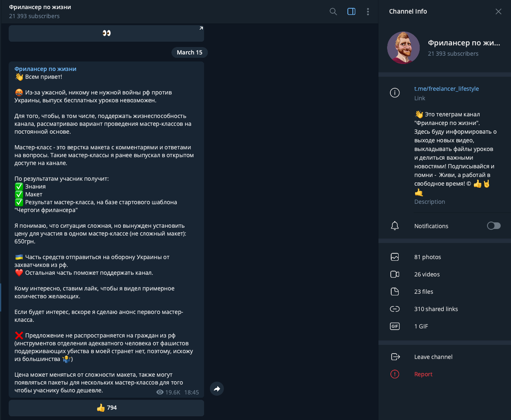Ну мастер класс и мастер класс, я подумывал как выпустить зарубежную карту, чтобы иметь возможность оплатить этот мастер класс.
Да Жека написал, что "Предложение не распространяется на граждан РФ"
(наверное в том числе потому, что граждан РФ примерно в начале марта частично отключили от SWIFT, VISA и Master card), почему бы 15го марта удобно не написать свой протест), но это всего лишь мои мысли - не готов ручаться, что Жека руководствовался именно тем, что я сейчас описал!
Итак, повторюсь, на тот момент времени я все еще нормально воспринимал информацию от Жеки, так как думал, что будет и дальнейшее продолжение курса, на котором я учусь, за который я заплатил И будут еще мастер классы - шикарно, подумал я и готов был заплатить еще за мастер классы.
Жека еще вбросил подтверждающее объявление по поводу мастер классов в телеграм и Discord.
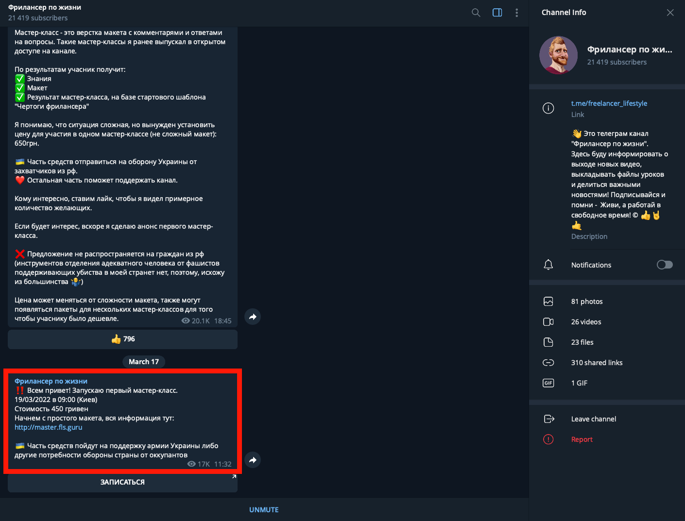После чего 18.03.2022 я увидел следующее обьявление в Discord:
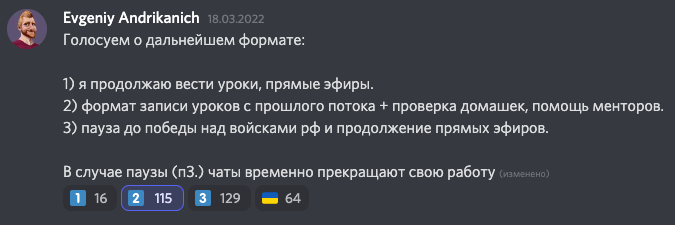Я стал разбираться, что означает 2й пункт, как оказалось, Жека предложил:
- Выкачать с пиратских ресурсов его прошлый курс по верстке "Курс по верстке: 2021"
- Продолжать сдавать домашки(по старому пиратскому курсу), которые будут проверять менторы, имеющие такую возможность.
И тут я сначала проголосовал за пункт 2, как мне показалось - это отличный компромисс, с учетом того, что Женя писал ранее о том, что на занятиях "отдает себя целиком и полностью", а сейчас не способен на это ибо в чатах много людей, которые поддерживают войну на Украине.
Я бы привел пример этой формулировки, но либо я не нашел это сообщение, либо Жека удалил его.
В любом случае мне это показалось тоже логичным. Однако гудки других людей начали сеять пожары в чатах по поводу того, что Жека не проводит уроки, но проводит платные мастер классы.
И вот тут уже задумался и я, далее просто отражу последовательность моей с Жекой переписки, также я добавлю некоторые реплики других участников(скрыв их логины), для удержания нити сообщений.
Знакомьтесь - его величество "Бамбалэйло" 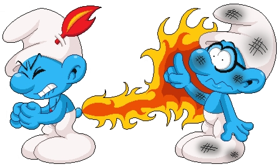
Мое первое сообщение Жеке(его я дублировал в различные чаты).

На это сообщение Жека не ответил, но в потоке сообщений написал следующее.
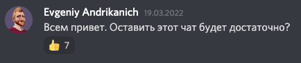 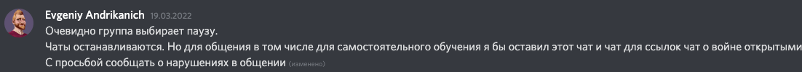Напомню, финальные итоги на момент снятия результатов(22.03.2022) голосования были таковы
16 человек за вариант 1
115 человек за вариант 2
129 человек за вариант 3
Про флажки - это отдельная история)
На сообщение Жеки по поводу закрытия чатов я ответил следующее:
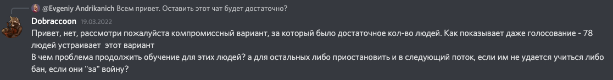После чего я повторил свое предложение с указанием ссылки на него
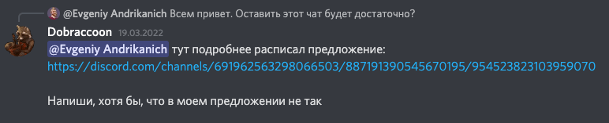Жека ответил не только мне.
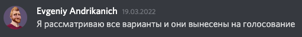Я на всякий продублировал свое предложение
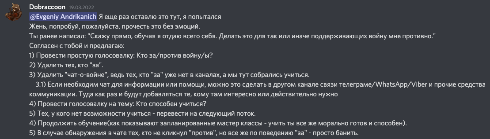Жека ответил, что рассматривает вариант разделения курса на тех, кто может учиться по пиратским курсам прошлого года и на тех, кто готов перехать на осень.
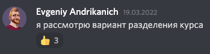Далее он спросил меня по поводу моего предложения.
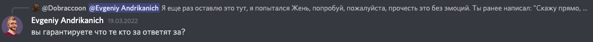На что я ответил и дополнил:
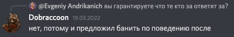 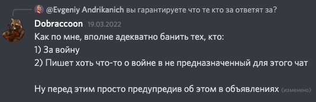Далее было много различных споров, вот пример личных протестов людей относительно голосующих того как их сокурсники голосуют.
Наверное человек не мог себе представить, что найдутся "сволочи", которые могут проголосовать за любой вариант, который предложил Жека.
Потому, те, кто позволил себе проголосовать за продолжение онлайн занятий попали в знаменитый санкционный список)
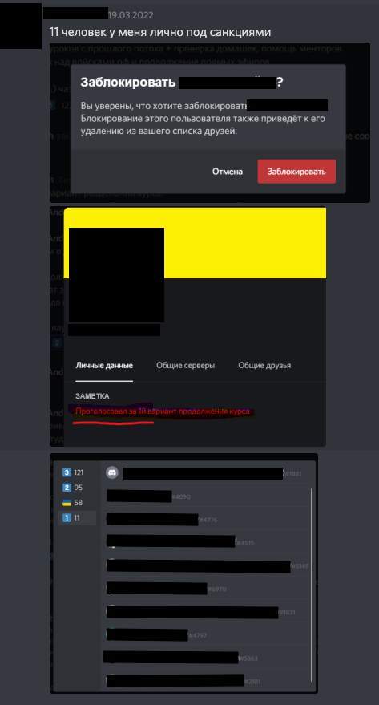К тому моменту времени я уже не понимал, почему могут провидится платные мастер классы, но не могут проводиться онлайн занятия, за которые люди УЖЕ заплатили.
Даже если это сейчас будет для тех, кто может учиться, а для тех, кто не может - это будет осенью, в рамках курса, на который набор уже открыт и принимается оплата.
Вот ссылка на курс "Курс по верстке: Осень 2022", старт 1го сентября 2022 года.
Ну и стоимость на курс увеличилась на 16% и стоит теперь 350$.
С учетом всего этого, я проголосовал не только за вариант 2, но и за вариант 1.
Я попросил пользователя добавить меня в свой санкционный список и у него не было шансов мне отказать)
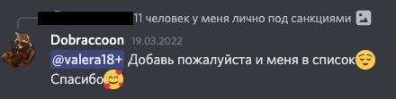 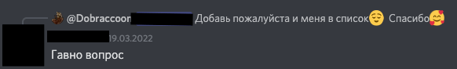Далее я пытался выяснить, действительно ли Жека будет проводить мастер классы:
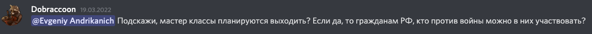Я хотел понять, планирует ли Жека урегулировать ситуацию в чатах(хотя бы в тех, что не предназначены для обсуждения войны):
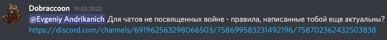Кому-то я ответил на то, как мне видеться оплачивать мастер классы и описал свою позицию, касательно мастер классов:
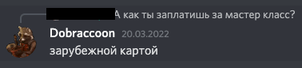 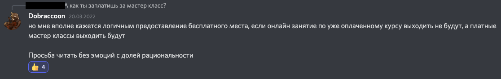Пытался привлечь внимание Жеки, так как считал, что я пишу достаточно рациональные вещи:
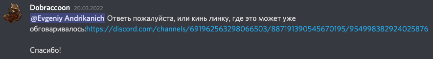Тут на глаза мне попалось еще это сообщение от Жеки, в котором он заподозрил людей, кто в реакциях к сообщению проставил эмоджи Российского флага, в том, что они поддерживают войну.
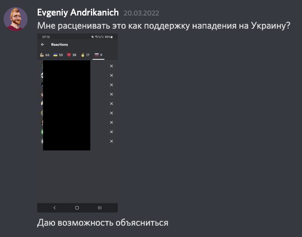 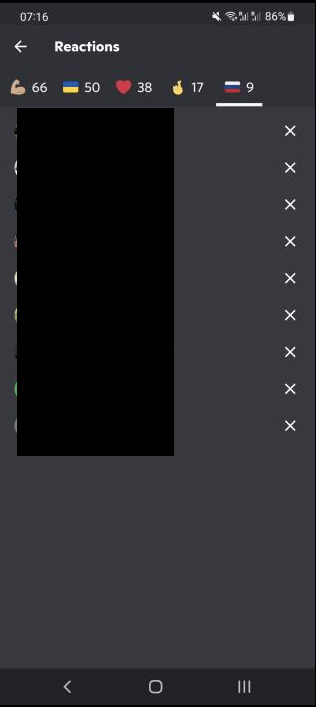Из личного примера:
Мне позвонил мой друг, которого я ранее подбил пойти на этот курс со мной. Его угораздило тыкнуть на флаг РФ, он сказал):
"Слушай, что за фигня? Я когда проставил реакции - я проставил все, которые уже были и реакцию Российского флага я воспринял, как поддержку граждан Украины со стороны граждан РФ, кто против войны. А сейчас меня обвиняют в поддержке войны, может проблема не с теми, кто реакции проставляет, а с теми, кто и как их понимают?"
Позже Жека начал мне отвечать, на вопрос касательно того, актуальны ли еще правила поведения в чатах, не предназначенных для обсуждения войны, он ответил:
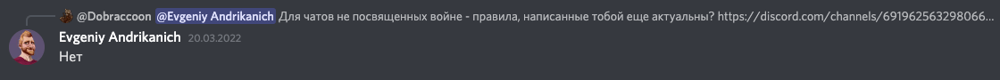На это я продолжил и он ответил:
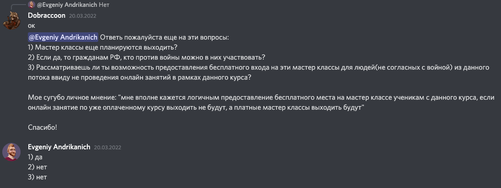Далее я продолжил уточнять:
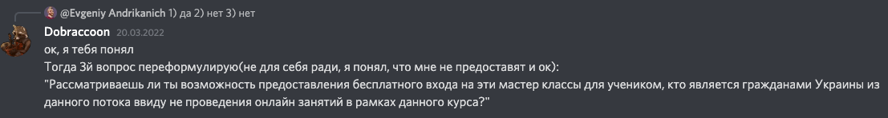Меня спросили чего именно я хочу от курса и мастер классов Жеки и я ответил:
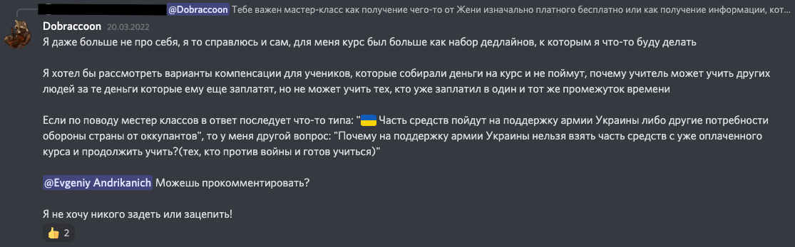На что Жека мне ответил с небольшой предвзятостью(IMHO):
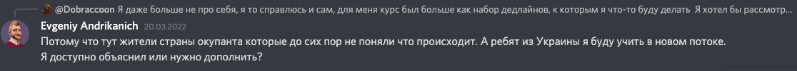Касательно моего вопроса: "Почему нет возможности учить учеников Украины в текущем потоке?", раз уж учеников РФ Жека морально не может учить - он ответил следующее:
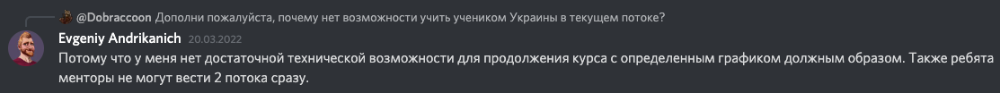В целом почти все логично, за исключением:
Ранее Жека в нормальное время уже переносил занятия и никто не возмущался:
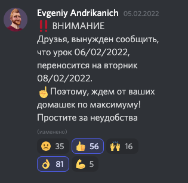Как результат опроса менторов самим Жекой, часть из них готова проверять домашки
Вопрос от меня только в том, почему Жека может проводить платные мастер классы, но не может проводить онлайн занятия, даже по не предсказуемому графику, даже с переносом.
Как мне видиться, в текущих условиях люди тем более не будут возмущаться, но будут рады, что Жека уделяет время тем, кто оплатил курс(при условии, что он способен выделить время и силы на платные мастер классы)!(IMHO)
Почему он говорит, что "Также ребята менторы не могут вести 2 потока сразу." мне не совсем понятно, ибо на текущем курсе есть менторы, которые готовы проверять домашки тех людей, которые могут учиться, а на следующем курсе тоже будут менторы и они смогут проверять домашки тех, кого Жека может перекинуть с текущего курса, которые не способны сейчас учиться ввиду печальных событий.
Просьба обратить внимание конкретно на это сообщение:"Я правда искренне все бы понял, если бы Жека поставил весь курс на паузу ввиду текущих событий. Но возможность посвящать время новому платному контенту, на посты "достоверных" новостей в различные чаты, на поддержку кучи срача в учебных чатах вместо траты времени на уже оплаченные обязательства - как по мне не совсем честный подход."
Далее я пытался резюмировать свое отношение к его ответам:

После этого один пользователь запостил историю:

Далее признаюсь, я на тот момент времени уже принял более агрессивную позицию, особенно на фоне ситуации с флажками РФ и решил проявить себя(возможно не с лучшей стороны, но имеем то, что имеем)
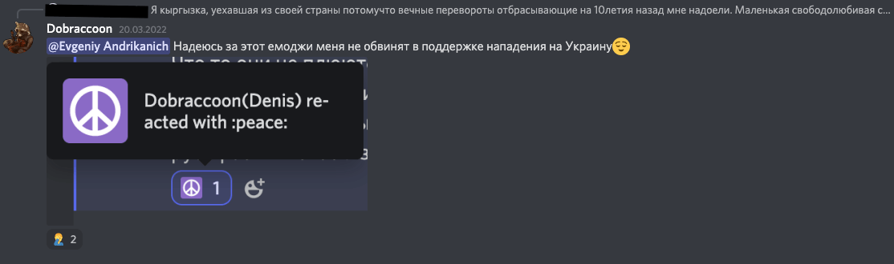Жека ответил на сообщение пользователя и тут я решил вмешаться(думаю это было не корректно, но в тот момент и у меня гудок тоже был хорошенько разогрет)
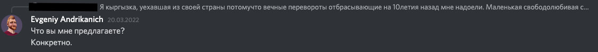 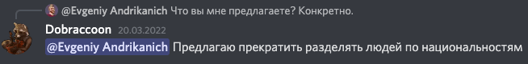Меня правда волновало то, что Жека разделил учеников на группы по признаку паспорта(почему именно паспорта - смотрите ниже)(IMHO)
Он и ответил мне)
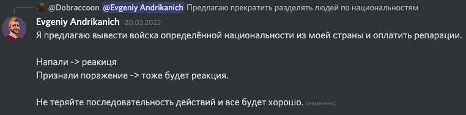Не совсем понял, предложил ли он конкретно мне вывести войска(как по мне это не в моих объективных возможностях), но на горячем гудке я и ответил:
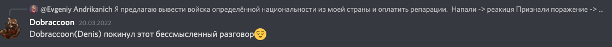Жека наверно подумал, что мы только начали говорить о действительно важных вещах и запостил:
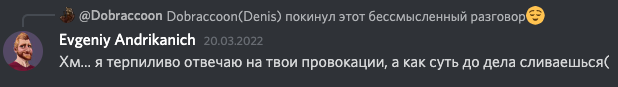Следующий ответ содержит мое реальное и искреннее мнение касательно того, на сколько я вправе рассуждать на те темы, которые там все обсуждают.
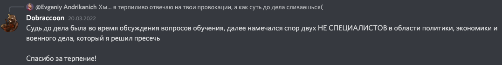Жека решил обвинить страну, где я проживаю в том, что она напала на Украину. Не знаю что Жека подразумевает под страной, как по мне страна не может принадлежать конкретно мне и состоит она в первую очередь из людей(народа, если угодно), а люди РФ на сколько мне известно в своем большинстве НЕ поддерживают данное решение правительства.(IMHO)
Я решил уточнить, что с точки зрения гражданства я отношусь к 2м странам, а родина(из Wiki описания) моя и вовсе Молдова.
Жека конечно же уточнил вопрос:
Не зная, что Жека вкладывает в "РФ", я решил тоже со своей стороны уточнить и задать наводящие вопросы:
Ну и решил добавить немного юморной "логики":
Далее Жека начал задавать наводящие вопросы, на основе которых начал проводить чистки в рядах)
Один пользователь сделал вброс с "достоверными" новостями и мне посчастливилось отличиться в остроумии касательно вопроса восприятия "достоверных" новостей:
Уже на всякий случай начал лепить Дисклеймер, мало ли - еще не так поймут.
Был аналогичный пост, но с уже более жестким контентом(на уровне расчлененки), на который мне тоже хватило "ума" отреагировать. Само сообщение увы показать не могу, его удалили с канала, что именно я далее и подчеркнул.
И тут Жека нашел за что зацепится)
Ну как бы контент удален, уверенным даже косвенно я точно быть не мог, потому честно и ответил, предполагая к чему данный вопрос:
Также после того, как Жека запостил сообщение, я решил еще раз уточнить свою позицию:
Но видимо мне это не помогло, вождь Верстляндии уже все решил)
Я попытался все же уточнить:
После чего я успел прочитать сообщение вождя и меня успешно выкинули на<тут могла быть ваша реклама> с канала обучения Верстке.
Видимо он ожидал, что все будут верить всему тому, что постят люди, которые берут информацию из "надежных" источников.
В общем далее последовало объявление:
Вот с этим я прям соглашусь, у Жеки отличный бесплатный курс по верстке на Youtube канале и по качеству он отменен!(IMHO)
Ну и было вброшено от Жеки последнее объявление:

Как результат - неугодные, кто мог позволить себе высказываться были исключены(я не один такой), а остальные разделились на группы:
Одни продолжают учиться за 200$(потому, как 100$ Жека реально отработал) на уроках, скаченных с пиратских ресурсов.
Другие перенесены на курс, который будет осенью.
В общем, что я по этому поводу думаю(если кому интересно):
Жека все еще отличный учитель, который доходчиво разжевывает материал.
Жека все еще может вернуть деньги хотя бы Украинцам, как показывают мастер классы и следующий курс, техническая возможность у него есть. Ну а те, кому вернут средства, могут уже по возможности и желанию присоединиться на осенний курс. А ведь могут быть и те, кто сильно был бы не прочь вернуть свои средства, которые собирались несколько месяцев, а некоторыми участниками даже одалживались.
Лично на мои средства даю добро купить Жеке огнетушитель в личное пользование, возможно он понадобиться.
Как я вижу правильным последовательность действий, после начала событий:
- Не создавать чат "чат-о-войне".
- Запретить обсуждение политических вопросов в чатах.
- Пресекать и банить за нарушение пункта 2.
- Провести опрос желания получения оставшихся средств обратно(при технической возможности), кому-то эти средства сейчас очень нужны(мне нет).
- По пункту 4 опрос провести так, чтобы люди ответили в личку(некоторые из участников могут расценить такую просьбу как эмоджи флага РФ и минимум создать свой санкционный список).
- По возможности проводить онлайн занятия.
- При отсутствии возможности проведения онлайн занятий не проводить мероприятия, которые могут трактоваться как деятельность ВМЕСТО проведения онлайн занятий.
Но кто я такой, чтобы предлагать какие-то решения. Максимум, что я могу - это сверстать убогую домашку - это кстати она)
Жека, если ты это смотришь, не обессудь за качество верстки(на что успел выучиться у тебя на курсе)
Всем добра!